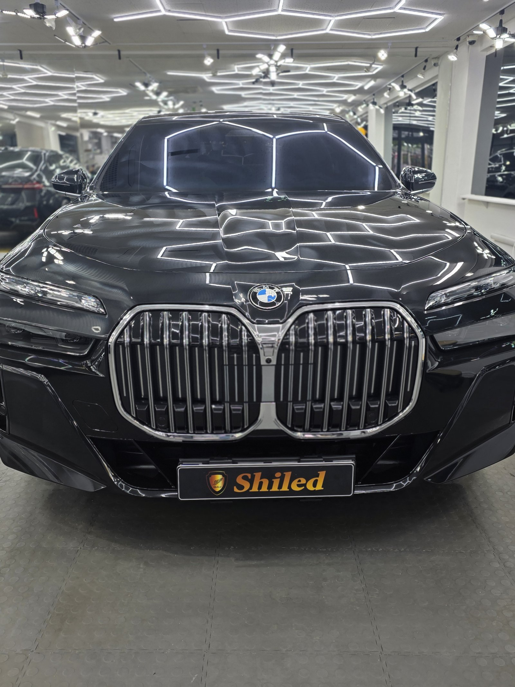
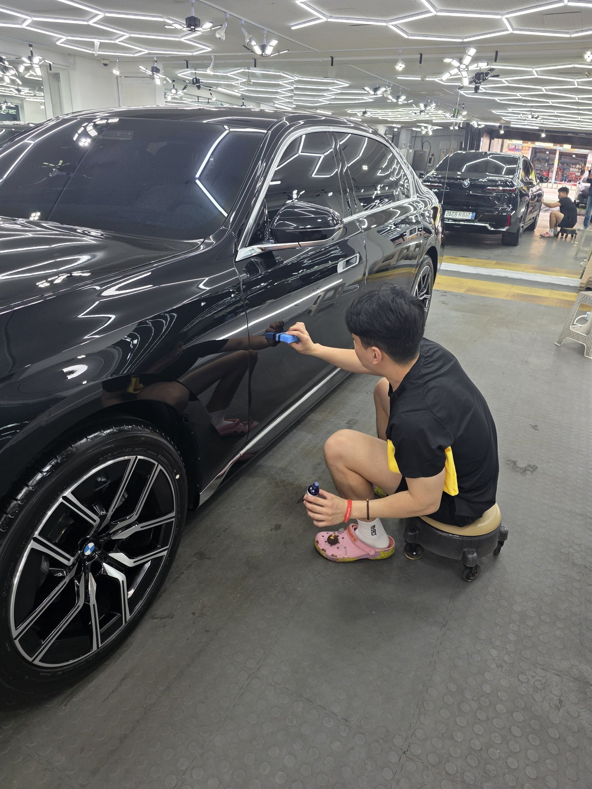
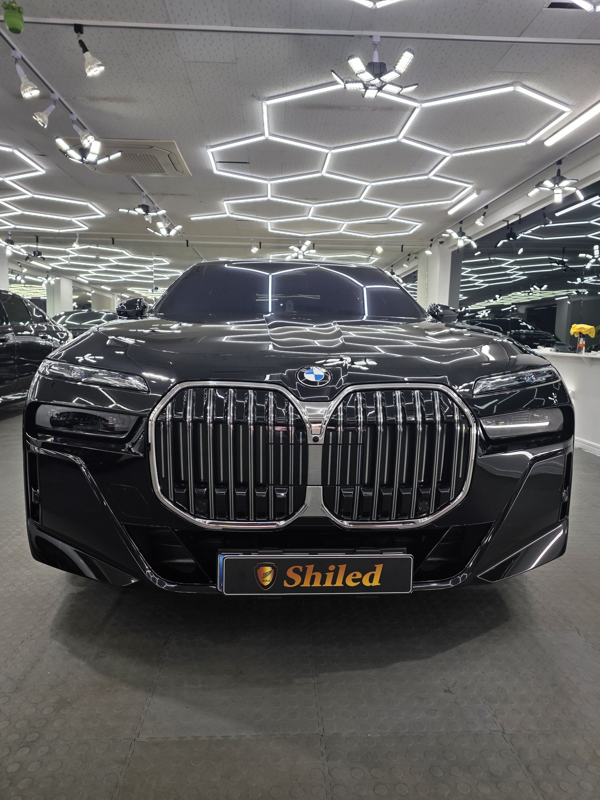
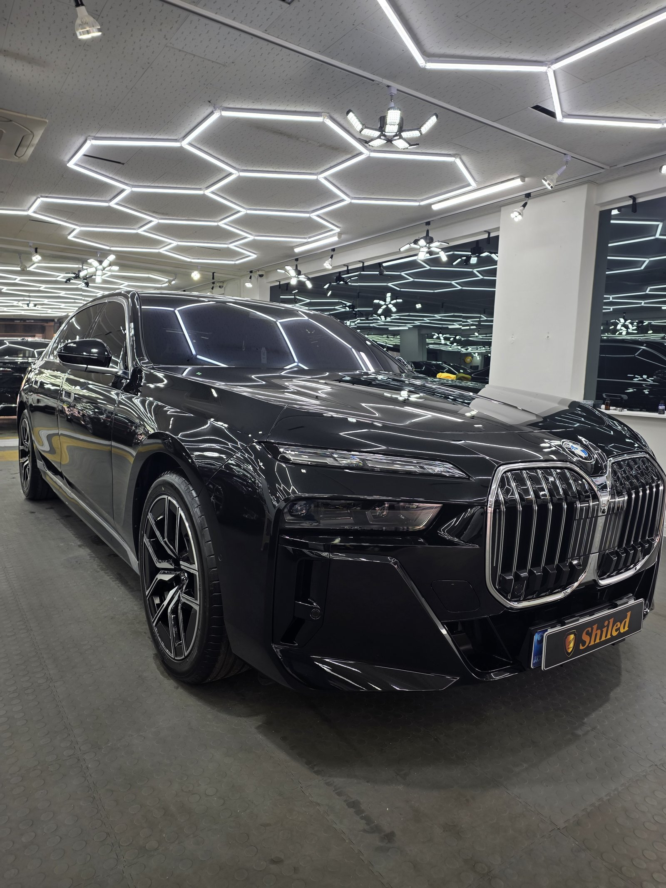
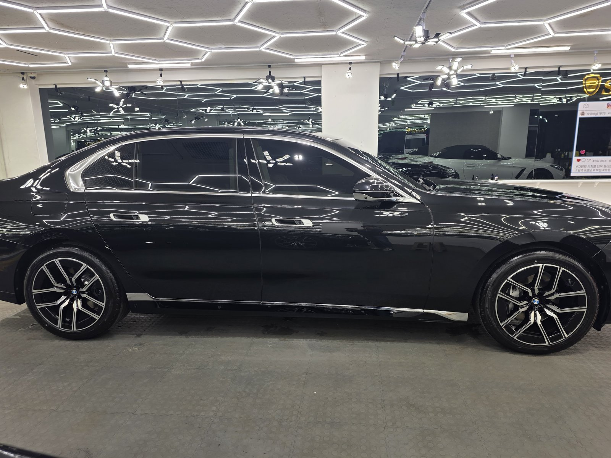
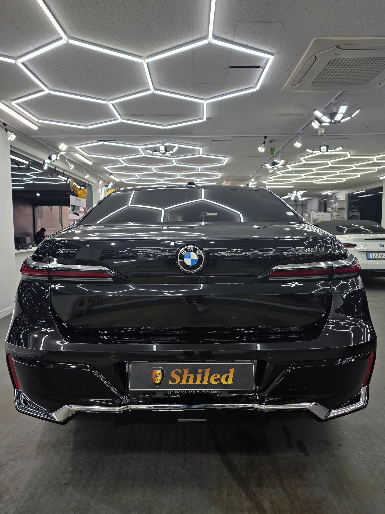
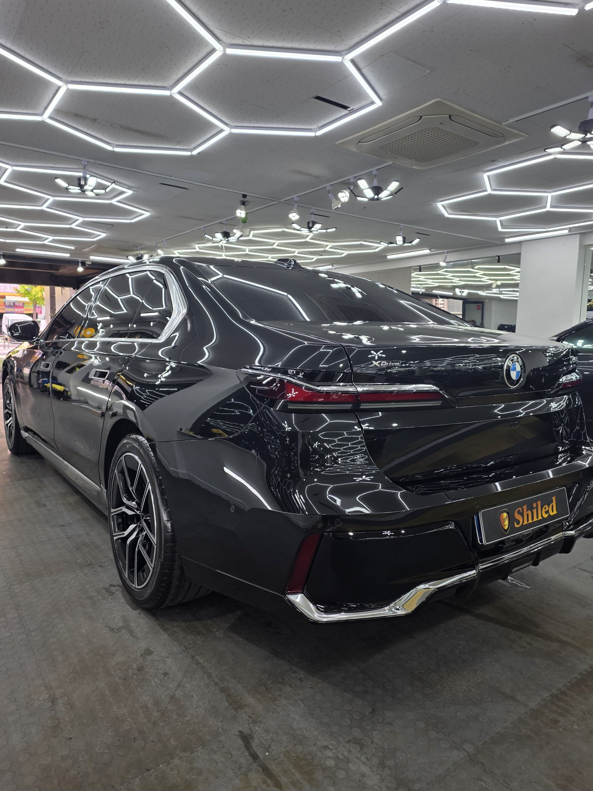
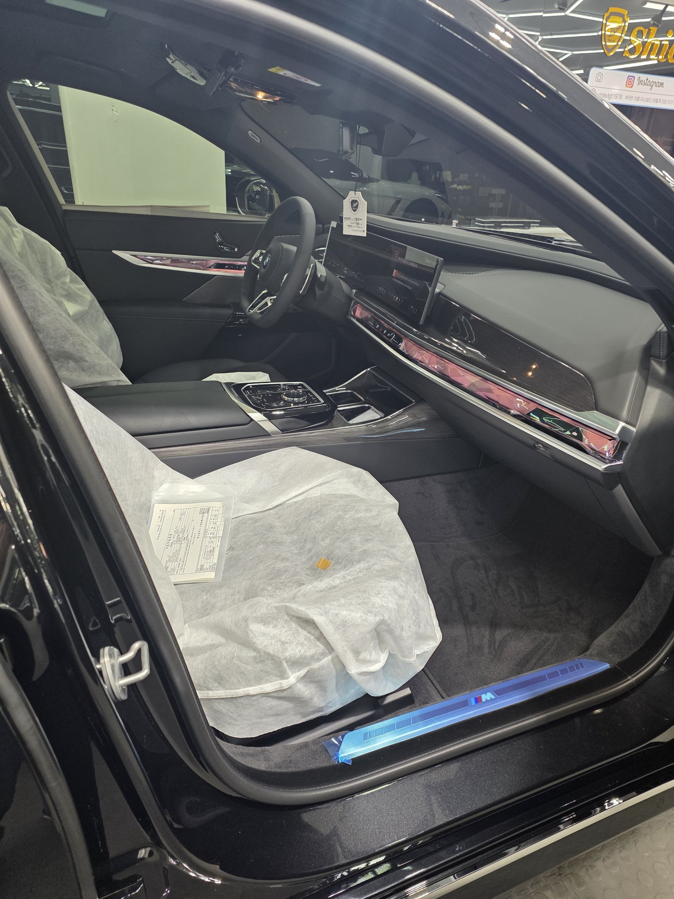
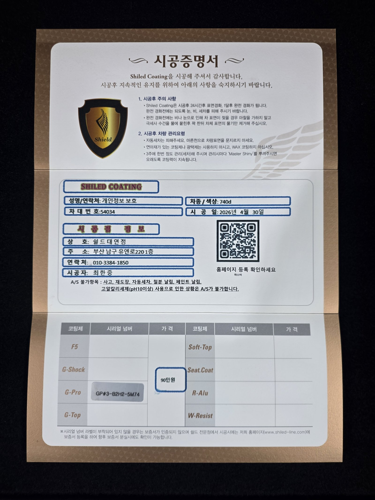

BMW 740d 검정입니다. 신차 상태 그대로 쉴드광택에 들어왔습니다.
이 차는 G-PRO 유리막코팅 + 시트코팅으로 진행했습니다.

740d처럼 큰 세단, 왜 G-PRO인가
코팅은 발색만 보고 고르는 게 아닙니다. 차와 운행 패턴에 맞춰야 합니다.
740d는 플래그십 세단답게 장거리 운행이 잦습니다. 이 차주분은 화려한 색감보다 스크래치 내성과 내구성을 원하셨습니다. 그래서 저희 제품 중 경도가 가장 높은 G-PRO 하드코팅으로 잡았습니다.

신차도 전처리부터 시작합니다
신차라고 바로 코팅부터 올리지 않습니다.
운송·전시 과정에서 묻은 미세 오염과 클리어 자국을 디테일링 세차와 탈지로 걷어낸 뒤 G-PRO를 올립니다. 검정은 이 전처리 상태가 그대로 드러나는 색이라 더 꼼꼼하게 봅니다.
기술자의 팁
G-PRO는 경도가 가장 높은 대신 발색 향상은 F5보다 덜합니다. 검정 발색을 더 살리고 싶다면 F5를 얹은 듀얼 조합도 가능합니다. 차주분의 운행 습관과 우선순위를 먼저 여쭤보고 코팅을 정하는 이유입니다.


마감 후
헥사 조명이 보닛과 도어 패널 위로 끊김 없이 이어집니다. 도장면이 고르다는 뜻입니다.
검정 특유의 깊은 발색 위에, 단단한 보호막을 한 겹 입힌 상태입니다.



실내는 시트코팅까지
외장만 끝내지 않았습니다.
가죽시트는 오염과 자외선에 그대로 노출되면 갈라지고 색이 바랩니다. 신차 상태일 때 시트코팅까지 올려두면 실내 컨디션도 함께 오래 지킬 수 있습니다.

시공증명서를 함께 드립니다
모든 시공 차량에 시공증명서를 드립니다.
차종·시공일·코팅제 시리얼 번호가 적혀 있고, 홈페이지에 등록해 보증을 받으실 수 있습니다. 이 차는 G-PRO 코팅과 시트코팅으로 기록돼 있습니다.

차종·시공일·코팅제 시리얼이 기재된 시공증명서
자주 묻는 질문
Q. 740d처럼 큰 세단은 왜 G-PRO를 올리나요?
A. 장거리 운행이 잦은 플래그십 세단은 발색보다 스크래치 내성·내구성이 우선인 경우가 많습니다. 저희 제품 중 경도가 가장 높은 G-PRO를 권해드립니다.
Q. 신차인데도 광택 작업이 필요한가요?
A. 필요합니다. 신차라도 운송·전시 과정에서 미세한 오염이 남습니다. 디테일링 세차와 전처리로 정리한 뒤에 코팅을 올려야 제대로 밀착합니다.
Q. 시트코팅은 왜 같이 하나요?
A. 가죽시트는 오염과 자외선에 노출되면 갈라지고 색이 바랩니다. 외장 코팅과 함께 올리면 신차 실내 컨디션을 더 오래 유지할 수 있습니다.
Q. 쉴드광택 위치와 예약은 어떻게 하나요?
A. 부산 남구 유엔로220 1F 쉴드광택입니다. 예약·상담은 010-3384-1850, 대표 최한중이 직접 상담하고 책임 시공합니다.
플래그십 세단일수록 코팅 선택이 다릅니다. 화려함보다 내구성이 필요하다면 G-PRO입니다.
제품을 직접 만드는 사람이 직접 시공합니다.
부산에서 신차코팅을 고민 중이시면 편하게 연락 주십시오.
어떤 차를 타냐보다 어떻게 타냐가 중요합니다~!
시공 중에는 전화를 받지 못할 때가 많습니다.
카카오톡으로 차종과 원하시는 시공을 남겨주시면 확인 후 답변드립니다.
쉴드광택 · 부산 남구 유엔로220 1F · 대표 최한중